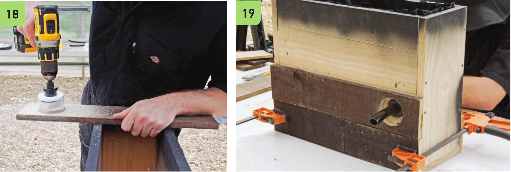

12 Staple the plastic liner along the inside upper rim of the frame to hold it in place. 13 Cut away the excess plastic sheeting with scissors. 14 Assemble the drainage pipe. Attach a 3" piece of W vinyl tubing to the fill/drain fitting. Unscrew the fastener but keep the rubber gasket on the fitting. 15 Create a small hole in the plastic liner in the middle of the drainage hole. The hole in the liner should fit tight around the fitting. 16 Attach the drainage pipe to the frame. Tightly screw on the fastener to make the fitting watertight. 17 Test the drainage pipe before proceeding! Make sure there are no leaks. If leaks are found around the fitting, adjust the liner and tighten the fasten. If leaks are found elsewhere, remove and replace the liner. Do not proceed with leaks; water should only drain from the drain pipe. Make the Decorative Weathered Hardwood Exterior Adding the weathered hardwood exterior is optional. This system would also look great painted. During the assembly of the hardwood exterior I accidentally cut the side panels 1 inch short. I improvised a solution by adding long skinny pieces of hardwood to patch in the corners. The dimensions used in these instructions have been corrected so you won't make the same mistake ... or creative flair . . . lots of ways to looks at mistakes in DIY! 18 U se the 2" hole saw drill bit to create a hole in one of the 19V2 " segments of weathered wood. The center of the hole should be 3" from the end of the board. 19 Attach the weathered hardwood to the frame. Option 1 : Use quick-set clear epoxy and hold boards in place with clamps while epoxy dries. Option 2: Use W wood screws to secure boards to frame. HYDROPONIC GROWING SYSTEMS 65
